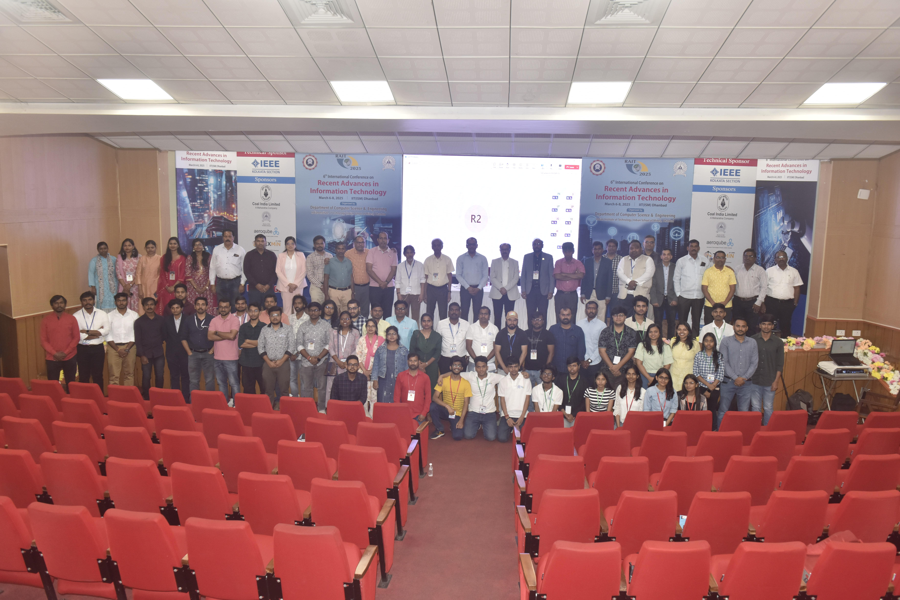

Dipnarayan Das
Doctoral Fellow @ IIT (ISM) Dhanbad
Dipnarayan Das is a recipient of C-DOT STAR Scholarship in 2025 from the Department of Computer Science and Engineering, Indian Institute of Technology (ISM) Dhanbad. His current focus is on security integration in fog-enabled IoT networks. He served as an Assistant Professor at the Center for AI & ML, ITER, Siksha ‘O’ Anusandhan. His research interests span computer networks, cryptography, IoT, and security. He has authored multiple journal and conference publications, and serves as a reviewer for IEEE IoT journal. He was nominated Academic Excellence award at the Indo Global Skills Summit & Expo 2017.
Class Representative, Ph.D. level
Department of Computer Science Engineering
Indian Institute of Technology (ISM) Dhanbad
E-mail: 23dr0244[at]]iitism.ac.in
Phone: (+91) - 9[Zero]83771612
Class Representative, Ph.D. level
Department of Computer Science Engineering
Indian Institute of Technology (ISM) Dhanbad
E-mail: 23dr0244[at]]iitism.ac.in
Phone: (+91) - 9[Zero]83771612

News
August 2025
For my achievement of the C-DOT scholarship, I received praise from HOD, CSE at Annual CSE festival Udbhav 2025.
April 2025
Selected as a C-DOT STAR Scholar from IIT (ISM) Dhanbad for the 2025 Cohort.
December 2023
Awarded the Institute Assistantship from MHRD, Govt. of India, for pursuing a Ph.D. at IIT (ISM) Dhanbad.
The complete list has been truncated to save space and time.
Employment and Education
2023'-'Present
Ph.D. in CSE at Indian Institute of Technology (ISM) Dhanbad.
2023
Assistant Professor, Faculty of Engineering and Technology (ITER), Siksha ‘O’ Anusandhan (Deemed to be University).
2021-'23
M.Tech in CSE at National Institute of Technology (NIT) Durgapur.
The complete list has been truncated to save space and time.
Professional Activities
June 2025
Serving the role of Ph.D. Class Representative for the CSE Department at IIT (ISM) Dhanbad.
Since April 2025
Acting as a reviewer for the IEEE Internet of Things Journal
March 2025
Served as Lead Coordinator for the "Recent Advances in Information Technology (RAIT) 2025" International Conference.
February 2025
Served as Master Trainer on the occassion of "Safer Internet Day", organized by CDAC-Patna at IIT (ISM) Dhanbad.
The complete list has been shortened to save space and time.
Teaching
2023-'26
Teaching Assistant, Indian Institute of Technology (ISM) Dhanbad. Handled labs for Software Engineering, Advanced DSA, and Computer Programming. Responsibilities include curriculum development, designing course content, and creating lab manuals.
2023-'24, Monsoon
Assistant Professor, ITER, Siksha 'O' Anusandhan. Taught the Computer Networks (CSE3034) course to B.Tech 3rd-year students. Developed Standard Operating Procedures (SOPs) for Computer Network lab experiments using Java
2022-'23, Monsoon
Teaching Assistant, National Institute of Technology Durgapur. Assisted in labs for Introduction to C Programming, and Computer Architecture & Organization.
2022-'23, Winter
Teaching Assistant, National Institute of Technology Durgapur. Assisted in the lab for Digital Logic Design.
The complete list has been truncated to save space and time.
Projects
Design and Implementation of Cross-Platform PUF-based Hardware Security for Computer Systems
2022-'23
Document
PUF
Hardware Security
IoT
Research
2024
Sourav Roy, Dipnarayan Das, and Bibhash Sen, "Secure and Lightweight Authentication Protocol Using PUF for the IoT-based Wireless Sensor Network," ACM Journal on Emerging Technologies in Computing Systems. (WoS Quartile: Q2)
2023
D. Das, S. Roy, et al., "A Novel Cross-Platform Physically Unclonable Function for Emerging FPGA-based IoT Devices," IEEE Asian Hardware Oriented Security and Trust Symposium (AsianHOST)
2022
S. Roy, D. Das, et al., "PLAKE: PUF-based secure Lightweight Authentication and Key Exchange Protocol for IoT," IEEE Internet of Things Journal. (WoS Quartile: Q1)
The complete list has been truncated to save space and time.
Gallery
1 / 4

Class Representatives
2 / 4

Lead Coordinator at RAIT Conference
3 / 4

Resource person at Bootcamp on Cryptography
4 / 4

Invited talk on Safer Internet Day